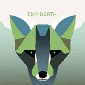
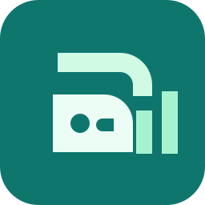

Grok Bot templates, plugins & skills189
Ready-made bots, skills, plugins and workflows for Grok Bot, Claude, Codex, OpenClaw, Cursor and n8n. Every button opens the original listing.
Use case
Showing 189 of 189 templates
Featured
Grok Bot templates
View all on x.ai ↗- Grok BotAddOverheard by Lenny Rachitsky
Scans Reddit, Hacker News, news sites and X for outside mentions of your name or brand and sends a short weekday digest.
- Grok BotAdddr eggbot by Lauren Tan
Asks a few questions about what you need, then designs and creates a new Grok Bot for you.
- Grok BotAddHaggle Bot by Daniel Gartshein
Reviews SaaS spend from Ramp and bills, spots unused seats and duplicates, and drafts vendor counteroffers for you to approve.
 Grok BotAddSEO & AEO Desk by Adam Tanguay
Grok BotAddSEO & AEO Desk by Adam TanguayTurns a keyword list or Search Console data into content ideas and writer briefs for search and AI answers.
- Grok BotAddCompetitor Watch by Shimecki
Watches competitor pricing, product and hiring pages from URLs you paste and flags the changes that matter.
- Grok BotAddNightly Audit Engineer by Lingxi Li
Reviews a whole codebase overnight, then opens one cleanup pull request per area.
- Grok BotAddResearchy by Farzad
Research and fact-check desk that runs every pass on Grok with live web search and returns sourced, dated claims.
 Grok BotAddImogen by Kent C. Dodds
Grok BotAddImogen by Kent C. DoddsWrites short, copyable alt text that focuses on the most important part of an image.
- Grok BotAddTradbot by Claire Vo
Watches your personal email and calendar for school forms, bills and RSVPs, and drafts replies for you to send.
- Grok BotAddProjects Manager by Eric Zakariasson
Runs team projects from Notion with a Slack channel per project and tasks for your specialist bots to claim.
- Grok BotAddRecruiting Coordinator by Tommy Hansen
Schedules interview loops, preps interviewers and chases stalled steps, without emailing candidates on its own.
- Grok BotAddfigma bro by John Bai
Turns a Figma frame into a build spec and audits components, tokens and motion.
 Grok BotAddSales Call Coach by Daniel Brill
Grok BotAddSales Call Coach by Daniel BrillScores your sales calls and tells you what to fix before the next one, from a transcript or recording.
- Grok BotAddMeeting Recap Deck by Krista Letz
Turns meeting notes into a recap deck in your own slide template, without inventing quotes.
- Grok BotAddPitch Deck Coach by Hiten Shah
Reviews a pitch deck the way an investor would read it, then helps tighten the story, evidence and slides.
- Grok BotAddClip Bot by This Week in AI
Finds the best moments in a long recording and cuts them into short captioned clips.
- Grok BotAddCopy Humanizer by Massimo De Luisa
Rewrites drafts, emails and pages so they read like a person wrote them, showing every change and why.
- Grok BotAddAI Search Visibility by Adam Tanguay
Checks whether AI assistants and Google recommend you, and which competitors they name instead.
- Grok BotAddtinkabot by Lauren Tan
Wraps an API into a Cursor or agent plugin (MCP plus skills), tests it locally, then helps you publish it.
- Grok BotAddCritiquito: Design Critique by Manuel Muñoz Solera
Turns a screenshot or Figma link into a design critique with ranked, concrete fixes.
 Grok BotAddEngineering Lead by Lauren Tan
Grok BotAddEngineering Lead by Lauren TanSplits work into Cursor Cloud Agents, chases CI and reviews, and only pings you when something needs you.
 Grok BotAddQA bot by Ulysses Ng
Grok BotAddQA bot by Ulysses NgRuns your acceptance checklist against the live deploy and gives a pass or fail before you ship.
- Grok BotAddPM bot by Ulysses Ng
Writes a dated scope: what's in, what's out and how you'll know it's done, before engineering starts.
- Grok BotAddThe Morning Newspaper by Karen X. Cheng
Builds a personal newspaper from your email and calendar and prints it overnight.
- Grok BotAddCompany Docs Q&A by Anoop Baliga
Answers product and how-to questions from your live docs and connected sources, always with citations.
- Grok BotAddSite Audit by Shimecki
Audits a website for SEO, content, speed, accessibility, conversion and schema, with scored, prioritized fixes.
- Grok BotAddX Brief by Dan McAteer
Turns the X accounts and topics you choose into one short daily brief, without posting for you.
- Grok BotAddlast30days by Matt Van Horn
Researches what people said about any topic in the last 30 days across Reddit, X, YouTube, Hacker News and more.
 Grok BotAddProduct Idea Stress Test by Hiten Shah
Grok BotAddProduct Idea Stress Test by Hiten ShahTests a product or startup idea: what has to be true, evidence for and against, and what to test next.
- Grok BotAddImport Bot by Shub Gaur
Moves your setup from Claude Cowork, Codex, ChatGPT, OpenClaw and Hermes into Grok Bot.
 OfficialAddBeta Adoption Watcher by SpaceX · Official x.ai use case
OfficialAddBeta Adoption Watcher by SpaceX · Official x.ai use caseSee who's actually trying the new feature. Monitors usage and surfaces which customers are in, so the team can follow up.
 OfficialAddBug Reproduction by SpaceX · Official x.ai use case
OfficialAddBug Reproduction by SpaceX · Official x.ai use caseGive engineers reports they can trust. Catches the thread, clicks the same path in staging, captures the failure, and drops a repro pack (steps,...
 OfficialAddCall FAQ Miner by SpaceX · Official x.ai use case
OfficialAddCall FAQ Miner by SpaceX · Official x.ai use caseKeep enablement current from real calls. Tracks questions, timestamps answers, and links back to the source recording.
 OfficialAddCloud Agent Orchestrator by SpaceX · Official x.ai use case
OfficialAddCloud Agent Orchestrator by SpaceX · Official x.ai use caseKeep many cloud agent runs moving without babysitting each one. Kicks off runs, monitors, chases what's stuck, and summarizes the report.
 OfficialAddDocs Auditor by SpaceX · Official x.ai use case
OfficialAddDocs Auditor by SpaceX · Official x.ai use caseCatch docs that are out of date with the product. Diffs help center and internal notes against what shipped last week, flags stale pages, and drafts the...
- OfficialAddFeature Request Tracker by SpaceX · Official x.ai use case
Never lose "who asked for this." Mines Slack and calls into a living list tied to customers, so the spec has a real demand trail.
 OfficialAddPlaytest Operator by SpaceX · Official x.ai use case
OfficialAddPlaytest Operator by SpaceX · Official x.ai use caseBrute-force test the product path when APIs aren't enough. Drives the UI on a computer, captures failures, and returns a tight findings pack.
 OfficialAddProduct Feedback Analyst by SpaceX · Official x.ai use case
OfficialAddProduct Feedback Analyst by SpaceX · Official x.ai use caseTurn scattered product signal into a prioritized view. Collects and clusters feedback from connected sources, weighs evidence and urgency, and drafts...
- OfficialAddProduct Performance by SpaceX · Official x.ai use case
Get a clear view of the metrics that matter. Logs into observability tools, walks the flamegraphs, and comes back with hotspots plus a short writeup...
 OfficialAddPrototype Builder by SpaceX · Official x.ai use case
OfficialAddPrototype Builder by SpaceX · Official x.ai use caseGo from ask to something clickable fast. Writes on its computer and comes back with a screenshot plus a live URL.
 OfficialAddSecurity Questionnaire Filler by SpaceX · Official x.ai use case · Acts with your approval
OfficialAddSecurity Questionnaire Filler by SpaceX · Official x.ai use case · Acts with your approvalSpeed through vendor security portals. Logs into the questionnaire site, pulls answers from your trust center and past RFPs, drafts every field, and...
 OfficialAddMarketing Calendar Owner by SpaceX · Official x.ai use case
OfficialAddMarketing Calendar Owner by SpaceX · Official x.ai use caseKeep regional and global content, launch, and events calendars in sync. Pulls from Notion and keeps webinars and campaigns current without a weekly chase.
 OfficialAddNewsletter Writer by SpaceX · Official x.ai use case
OfficialAddNewsletter Writer by SpaceX · Official x.ai use caseShip monthly marketing and product updates on time. Pulls what's new from launches, wins, and your calendar, writes the issue in your voice, and parks...
- OfficialAddPersonal Site Builder by SpaceX · Official x.ai use case
Scaffold a personal site from a description, untangle domain issues, and leave you with a live starting point.
 OfficialAddPresentation Designer by SpaceX · Official x.ai use case
OfficialAddPresentation Designer by SpaceX · Official x.ai use caseBuild on-brand decks without starting from a blank slide. Uses your master template and brand system and delivers an editable link ready to refine and...
 OfficialAddAccount Health by SpaceX · Official x.ai use case
OfficialAddAccount Health by SpaceX · Official x.ai use caseSee risk and expansion before the QBR. Reads usage and signals across your book and turns portfolio noise into a clear watch list.
- OfficialAddAccount Manager by SpaceX · Official x.ai use case
Keep every key account warm without rebuilding context each time. Preps every call from transcripts, notes, CRM, and Slack, drafts follow-ups, and keeps...
 OfficialAddAccount Research Specialist by SpaceX · Official x.ai use case
OfficialAddAccount Research Specialist by SpaceX · Official x.ai use caseTier accounts before you touch them. Pulls Salesforce + live signals, scores fit and warmth, and builds a shareable research pack per account.
 OfficialAddCommunity Operations Manager by SpaceX · Official x.ai use case
OfficialAddCommunity Operations Manager by SpaceX · Official x.ai use caseKeep the ambassador loop moving. Screens apps, triages DMs across channels, and drafts nurture on a cadence so community isn't a full-time chase.
- OfficialAddCompelling Events Monitor by SpaceX · Official x.ai use case
Engage when there's a real reason. Watches leadership posts for awards, launches, and hiring signals, then sends a short digest of posts to engage with...
 OfficialAddCRM Operations Manager by SpaceX · Official x.ai use case
OfficialAddCRM Operations Manager by SpaceX · Official x.ai use caseKeep the pipeline clean. Handles CRM and org-chart hygiene before and after meetings so records stay current without a manual pass.
 OfficialAddDeal Desk Coordinator by SpaceX · Official x.ai use case · Acts with your approval
OfficialAddDeal Desk Coordinator by SpaceX · Official x.ai use case · Acts with your approvalDraft contextual internal deal notes from past emails, Salesforce, and calls, then submit in Salesforce once you approve.
 OfficialAddDeck Updater by SpaceX · Official x.ai use case
OfficialAddDeck Updater by SpaceX · Official x.ai use caseLeave the room with the slide already moving. Updates your deck from discovery notes mid-call or right after, with next steps baked in.
 OfficialAdd
OfficialAddAnswer "send me the recordings" without digging. Finds Zoom assets, builds one-pagers, uploads to Drive, and drafts the reply with links.
 OfficialAddEvent Guest Screener by SpaceX · Official x.ai use case · Acts with your approval
OfficialAddEvent Guest Screener by SpaceX · Official x.ai use case · Acts with your approvalFill the room with the right people. Scores event applicants against your ICP and batch-approves strong fits in the invite tool.
 OfficialAddLinkedIn Campaign Manager by SpaceX · Official x.ai use case
OfficialAddLinkedIn Campaign Manager by SpaceX · Official x.ai use caseOwn lead-gen funnel consistency across ads, forms, follow-up, and UTMs. Drafts campaigns for approval and keeps every offer and handoff clean.
 OfficialAddMeeting Prep Buddy by SpaceX · Official x.ai use case
OfficialAddMeeting Prep Buddy by SpaceX · Official x.ai use caseWalk into every meeting ready. Builds prep packs from calendar, notes, CRM, Gong, and Slack: who's in the room, last touch, open threads, and a...
 OfficialAddMerch Fulfillment Operator by SpaceX · Official x.ai use case · Acts with your approval
OfficialAddMerch Fulfillment Operator by SpaceX · Official x.ai use case · Acts with your approvalSend merch to the right prospects. Runs outreach, watches the redemption form, pings you to approve/reject submission in chat, and sends your swag...
- OfficialAddPipeline Analyst by SpaceX · Official x.ai use case
Walk into pipe with a clean view. Scrubs Salesforce + sheets, flags stalls and commit risk, and drops a Monday scoreboard.
 OfficialAddProspecting Plan Builder by SpaceX · Official x.ai use case
OfficialAddProspecting Plan Builder by SpaceX · Official x.ai use caseBuild the week's book of work. Seeds contacts, enriches email/mobile, and writes a ready-to-work tracker so outbound starts from a list.
 OfficialAddRenewal Desk Operator by SpaceX · Official x.ai use case
OfficialAddRenewal Desk Operator by SpaceX · Official x.ai use caseWalk into every renewal already briefed. Builds a 90-day pack per account from usage, tickets, Gong, and CRM, drafts the commercial note, and nudges...
 OfficialAddSales Call Coach by SpaceX · Official x.ai use case
OfficialAddSales Call Coach by SpaceX · Official x.ai use caseLeave every call with homework. Reviews Gong calls and leaves timestamped coaching on discovery, objections, and executive presence, plus a call score.
 OfficialAddSales Outbound by SpaceX · Official x.ai use case
OfficialAddSales Outbound by SpaceX · Official x.ai use caseHand off research and outbound. Researches accounts overnight, scores contacts with intent, drafts email and LinkedIn in your voice, and leaves a review...
 OfficialAddSocial Media Manager by SpaceX · Official x.ai use case
OfficialAddSocial Media Manager by SpaceX · Official x.ai use casePost in your voice without living in drafts. Studies your real history, drafts when something noteworthy ships, parks posts for you to publish, and...
 OfficialAddTicket Triage Specialist by SpaceX · Official x.ai use case
OfficialAddTicket Triage Specialist by SpaceX · Official x.ai use caseClear the queue without living in it. Watches support on a cadence, drafts replies only, and stays quiet when it's clean.
 OfficialAddContract Desk by SpaceX · Official x.ai use case
OfficialAddContract Desk by SpaceX · Official x.ai use caseSee the week of paper at a glance. Summarizes by stage and owner, pulls key terms, and flags blocked reviews.
- OfficialAddExpense Manager by SpaceX · Official x.ai use case
Stay on top of the money. Builds the weekly summary from your expense manager and sheets, logs new receipts from email, and nudges owners on missing...
 OfficialAddInvoice Coordinator by SpaceX · Official x.ai use case
OfficialAddInvoice Coordinator by SpaceX · Official x.ai use caseStop invoices from sitting. Forwards invoices, matches what it can, tracks campus or vendor actuals, and nudges the right owner when something needs a...
 OfficialAddPaid Media by SpaceX · Official x.ai use case · Acts with your approval
OfficialAddPaid Media by SpaceX · Official x.ai use case · Acts with your approvalPulls live channel and campaign data, Slacks a recommended reallocation against your monthly budget, and holds for your approval before making adjustments.
 OfficialAddPaid Media Creative Strategist by SpaceX · Official x.ai use case
OfficialAddPaid Media Creative Strategist by SpaceX · Official x.ai use caseSpot early creative winners before they're obvious. Writes a sharp why-it-works hypothesis and proposes the next test. No invented metrics.
 OfficialAddVendor Portal Operator by SpaceX · Official x.ai use case · Acts with your approval
OfficialAddVendor Portal Operator by SpaceX · Official x.ai use case · Acts with your approvalRun renewals, seats, and procurement on portals with no clean API. Clicks the same path every week and comes back with exceptions only.
 OfficialAddApartment Scout by SpaceX · Official x.ai use case · Acts with your approval
OfficialAddApartment Scout by SpaceX · Official x.ai use case · Acts with your approvalBook tours with a shortlist of eligible apartments as soon as they go on the market. Filters listings, emails to book tour times, and applies for the...
 OfficialAddSubscription Cleaner by SpaceX · Official x.ai use case · Acts with your approval
OfficialAddSubscription Cleaner by SpaceX · Official x.ai use case · Acts with your approvalCut the noise you forgot about. Collates receipt and newsletter mail, suggests what to kill, and unsubscribes what you approve.
 OfficialAddTravel Coordinator by SpaceX · Official x.ai use case · Acts with your approval
OfficialAddTravel Coordinator by SpaceX · Official x.ai use case · Acts with your approvalHold the best option before it expires. Compares flights and hotels to your rules, confirms before booking, and drops itinerary plus calendar.
 OfficialAdd
OfficialAddSee the landscape shift in meaningful ways. Monitors overnight for new launches and audits your site for fatigued creatives and stale messaging....
 OfficialAddSEO / AEO Auditor by SpaceX · Official x.ai use case
OfficialAddSEO / AEO Auditor by SpaceX · Official x.ai use caseTrack keyword, technical, AI-prompt, and competitor movement in one place. Surfaces whether you're gaining or losing ground, flags site issues that need...
 OfficialAddCalendar Coordinator by SpaceX · Official x.ai use case · Acts with your approval
OfficialAddCalendar Coordinator by SpaceX · Official x.ai use case · Acts with your approvalGet people in the same room. Schedules across calendars and chases the holds nobody else has time to chase.
 OfficialAddChief of Staff by SpaceX · Official x.ai use case
OfficialAddChief of Staff by SpaceX · Official x.ai use caseYour always-on assistant. Scans Slack, email, calendar, and meeting notes and delivers a succinct read out on what's new and what maps to your...
 OfficialAddDaily Briefing Writer by SpaceX · Official x.ai use case
OfficialAddDaily Briefing Writer by SpaceX · Official x.ai use caseStart the day with high quality inputs instead of noise. Delivers a tight daily brief of only the stories that matter to you.
 OfficialAddExecutive Assistant by SpaceX · Official x.ai use case
OfficialAddExecutive Assistant by SpaceX · Official x.ai use caseStay oriented without living in channels. Delivers a morning briefing, plus an automatic catch-up summary whenever you join a new room, so you're never...
 OfficialAddHiring Screener by SpaceX · Official x.ai use case
OfficialAddHiring Screener by SpaceX · Official x.ai use caseInterview the strong ones, not the whole pile. Scores applications or work samples against a defined bar and hands off an ATS-ready review.
 OfficialAddInbox Manager by SpaceX · Official x.ai use case
OfficialAddInbox Manager by SpaceX · Official x.ai use caseKeep email usable. Triages your inbox into clear categories, surfaces urgent and blocked threads, and drafts replies and cleanup. Every send stays...
 OfficialAdd
OfficialAddDraft clear, on-voice copy from your real context, matched to each audience and channel. Review-only so it never sends on its own.
 OfficialAddOnboarding Manager by SpaceX · Official x.ai use case
OfficialAddOnboarding Manager by SpaceX · Official x.ai use caseGive new hires a path, not a pile of links. Builds the checklist, pulls the right docs, answers day-one questions, and routes each ask to whoever can...
- OfficialAddStatus Report Writer by SpaceX · Official x.ai use case
Own the to-do so nothing slips. Pulls open action items from docs, meetings, and Slack into one living list and a morning digest.
 OfficialAddTalent Scout by SpaceX · Official x.ai use case · Acts with your approval
OfficialAddTalent Scout by SpaceX · Official x.ai use case · Acts with your approvalKeep recruiting moving while you sleep. Runs screen-to-offer: sources, drafts outreach in your voice, skips people already in the ATS, and handles...
- Open sourceGitHubawesome-grokbot by @kydlikebtc · ★ 366 on GitHub
Index of public x.ai/bot shares for Grok Bot. Every link is status-checked and every row attributed; bilingual EN/中文 catalog with a JSON schema, CI and a searchable site.
- Open sourceGitHubgrok-bot-cli by @ScriptedAlchemy · ★ 116 on GitHub · MIT
Command-line tool for Grok Bot agents and groups: create, update, message, inspect threads and automate cleanup from scripts.
- Open sourceGitHubHyperGrok Trading Desk by @galleonlabs · ★ 139 on GitHub · MIT
Open-source 7-agent Hyperliquid trading desk with role profiles and 17 skills for research, risk, execution and review. Risk warning: it can place real trades. Start read-only or on testnet; every trade needs a ticket you approve.
- Open sourceGitHubAwesome Grok Bot (RongleCat) by @RongleCat · ★ 440 on GitHub
Curated bilingual list of Grok Bot resources: guides, bots, skills and tools for always-on AI teammates with their own cloud computer.
- Open sourceGitHubGrok Bot Profiles by @HAEGONG · ★ 7 on GitHub · CC-BY-4.0
Four ready-to-use Grok Bot profiles (Spec Writer, Bug Reproducer, PR Producer, PR Verifier) with focused outcomes and explicit approval boundaries, so a bot never approves its own work.
- Open sourceGitHubAwesome Grok Bot (majiayu000) by @majiayu000 · ★ 72 on GitHub · CC0-1.0
Curated catalog of live x.ai/bot shares for Grok Bot with shelf tiers, searchable pages and a bilingual README. Community list; entries aren't verified by AgentScout.
- CommunityAddPR Reviewer by @mustafaergisi · Community bot (via awesome-grokbot), vetted by AgentScout
Reviews pull requests for risk, missing tests, and thin context so review starts with the scary diff. Leads with what can break, what is untested.
- CommunityAddAgent Looper by @dancingteeth · Community bot (via awesome-grokbot), vetted by AgentScout
You say what to build and how to know it's done. It keeps a coding agent working on your computer until that check passes.
- CommunityAddExaminer by @liam_fallen · Community bot (via awesome-grokbot), vetted by AgentScout
Maintain a reliable timeline of important changes so you can reconstruct what happened when something later goes wrong. Isolated: talk only to you.
- CommunityAddAI Harness Assistant by @gheeunit · Community bot (via awesome-grokbot), vetted by AgentScout
Keeps the AI coding tools you already have, like Codex, Grok Build, OpenCode, and Cursor, current on your Windows, Mac, and Linux machines.
- CommunityAddGreenBuild by @dkkkkd · Community bot (via awesome-grokbot), vetted by AgentScout
A senior QA and test-automation lead for testers and dev teams. It turns requirements into test plans and triages flaky tests.
- CommunityAddUI/UX/Designer. Product Engineer 1000x by @TomZarebczan · Community bot (via awesome-grokbot), vetted by AgentScout
World-class product engineer for mobile and desktop web. Ships Convex + TanStack + React end to end. Simple, intuitive UI with real taste.
- CommunityAdd
Editorial illustration bot that uses the illo skill (tmchow/illo-skill) to turn ideas, posts, and announcements into mascot-led images on Grok Bot.
- CommunityAddDesign Expert by @inqusit · Community bot (via awesome-grokbot), vetted by AgentScout
A product design lead that keeps AI-built UIs honest.
- CommunityAddFabrication by @JonathanSayle · Community bot (via awesome-grokbot), vetted by AgentScout
Takes your parts from CAD design to a finished 3D print. It checks fit, flat bed faces and hole sizes, and shows previews.
- CommunityAddChurn retention manager by @ColinMcDermott · Community bot (via awesome-grokbot), vetted by AgentScout
Catches churn before it lands, offers a real alternative, and reports why people left. For businesses saving cancellations and failed payments.
- CommunityAddEcho by @kristaletz · Community bot (via awesome-grokbot), vetted by AgentScout
Turns a customer call into slides from customer context. What we heard, next steps, project initiatives, or all of the above.
- CommunityAddEvents by @RichGarrick · Community bot (via awesome-grokbot), vetted by AgentScout
A market and pop-up inventory desk for small sellers. It builds pack lists before a show and logs what sold afterward.
- CommunityAdd
Skip the press. Lulu helps founders tell their story straight to the 50 to 500 people who actually matter: investors, early customers, future hires.
- CommunityAddLinkedIn Desk by @SEO · Community bot (via awesome-grokbot), vetted by AgentScout
LinkedIn Desk helps you keep network quality high without living in LinkedIn, by reviewing connection requests and LinkedIn invitations.
- CommunityAddMeeting to Money by @SumoSign · Community bot (via awesome-grokbot), vetted by AgentScout
Turns a sales meeting into a priced proposal, a signed go-ahead, an invoice, and payment chase. You approve every send. For freelancers and small agencies.
- CommunityAddDOGE (Department of Grok Efficiency) by @Av1dlive · Community bot (via awesome-grokbot), vetted by AgentScout
A Grok Bot whose only job is to audit your other bots and routines, flag what to cut or merge, and find bottlenecks.
- CommunityAdd
On first install, scans email once as soon as Gmail is ready, then weekly for receipts, renewals, and trials.
- CommunityAddAIUsageBot by @BrianDEvans · Community bot (via awesome-grokbot), vetted by AgentScout
Interviews you about which AI subscriptions to track and where leftover lives (local CLIs, apps), then pings remaining % as it drops.
- CommunityAddSlowBooks Cutover by @jschnett · Community bot (via awesome-grokbot), vetted by AgentScout
Migrate one QuickBooks Desktop company into SlowBooks via Conductor (read-only), then prove Trial Balance and spot-check P&L.
- CommunityAddNewsletter Cleanup by @scheemunai · Community bot (via awesome-grokbot), vetted by AgentScout
Audits Gmail newsletters (last 6 months), builds a three-bucket review.html, then unsubscribes only what you approve. Never deletes mail.
- CommunityAddBot inbox by @waynesutton · Community bot (via awesome-grokbot), vetted by AgentScout
A weekday unread digest for Grok Bots. Lists bots and group chats with new activity, one line each. Type scan anytime.
- CommunityAdd
Watches Gmail and pings you when a message looks time-sensitive or needs a reply. Reads freely; never sends, replies, or trashes mail unless you ask.
- CommunityAddHarper by @TravisWeathers · Community bot (via awesome-grokbot), vetted by AgentScout
An executive assistant for email, calendar, and texting. It triages your inbox, schedules people, protects deep-work time.
- CommunityAddBackpack by @RohanBhanotAI · Community bot (via awesome-grokbot), vetted by AgentScout
Reads school and activity emails you don't have time for and turns them into calendar events, reminders, and a weekly family plan.
- CommunityAddBFCM Email Planner by @ecomchasedimond · Community bot (via awesome-grokbot), vetted by AgentScout
Plans your full Black Friday / Cyber Monday email and SMS calendar: sends, segments, offer angles, subject lines.
- CommunityAddBe Happier by @lennysan · Community bot (via awesome-grokbot), vetted by AgentScout
Looks at your email and calendar each week, then suggests 3 concrete things that would make you happier. Protects existing life, does not add new habits.
- CommunityAddChef by @DogecoinNorway · Community bot (via awesome-grokbot), vetted by AgentScout
A home-cooking helper that adapts to the country you live in: seasonal produce, local dishes, holidays, and grocers where you are.
- CommunityAddInterview Prep by @techdevnotes · Community bot (via awesome-grokbot), vetted by AgentScout
Interview prep for any topic. Pick the topic and level, then climb with examples, running code, and quizzes until it feels interview-ready.
- CommunityAddCanvas by @daxperera · Community bot (via awesome-grokbot), vetted by AgentScout
Keeps an eye on a student's Canvas LMS: daily reminders of what's due, overdue or missing, assignment briefs and rubrics, and pass-mark math.
- CommunityAddEG4 Monitor by @look4terry · Community bot (via awesome-grokbot), vetted by AgentScout
Watches your EG4 solar and battery system on EG4 Monitor Center and sends you a nightly report with estimated savings, all read-only.
- CommunityAddHuman Copywriter by @massimodeluisa · Community bot (via awesome-grokbot), vetted by AgentScout
A human-voice rewrite desk for email, posts, blogs, DMs, landing-page bodies, and PR. American English by default.
 CommunityAdd
CommunityAddAn SEO and AEO program teammate. On first run it reads what you already connected, recommends a stack, and only asks for gaps.
- CommunityAddRedReplier by @tarasshyn · Community bot (via awesome-grokbot), vetted by AgentScout
Watches Reddit, X, Hacker News and Bluesky for mentions of your product, competitors and buying-signal phrases.
- CommunityAdd
A competitive intelligence agent for organic growth that watches rival sites, search rankings, and AI-answer visibility so real moves don’t get buried.
- CommunityAddsocials by @ashen_one · Community bot (via awesome-grokbot), vetted by AgentScout
Content scout for short-form creators: watches X and YouTube for filmable AI and tech stories and sends short, ready-to-film kits in chat.
- CommunityAddAI Resource Sift by @beamnxw · Community bot (via awesome-grokbot), vetted by AgentScout
For one AI topic, sweep papers, code, lectures, courses, Reddit, and official lab docs, then keep a large filtered stack.
- CommunityAddResearch Bot by @ArthurMacwaters · Community bot (via awesome-grokbot), vetted by AgentScout
This bot exists to do deep research and provide verifiable answers with sources.
- CommunityAddThoth by @RichSilver · Community bot (via awesome-grokbot), vetted by AgentScout
Named for the Egyptian god of writing, knowledge, and the moon. He does deep research for whatever you are working on.
- CommunityAdd2nd Brain by @LeTerryBZH · Community bot (via awesome-grokbot), vetted by AgentScout
Compiles notes, PDFs, and X bookmarks into an inspectable markdown wiki (Karpathy Lattice: raw/ → wiki/).
- CommunityAddAI Radar by @gota_bara · Community bot (via awesome-grokbot), vetted by AgentScout
Always-on AI news radar. Watches AI labs' official X accounts, their staff, researchers and well-known people, plus blogs and changelogs.
- CommunityAddStoriesBot by @viticci · Community bot (via awesome-grokbot), vetted by AgentScout
Search 17 years of MacStories.net. Longform reviews, Setups, the Shortcuts Archive, and anything Federico or John published. Filter by time and author.
- CommunityAddFrontier Model Watch by @GuleidAmina · Community bot (via awesome-grokbot), vetted by AgentScout
Watches official releases from xAI, Anthropic, Google, OpenAI, Moonshot, Alibaba, Zhipu, DeepSeek, MiniMax, and Tencent. Runs at 07:30 EAT.
- CommunityAddRevenue Signal Radar by @ericosiu · Community bot (via awesome-grokbot), vetted by AgentScout
Weekday revenue-action radar for HubSpot shops. Ranks expansion, stalled deals, and closed-lost revival with evidence and draft next steps.
- CommunityAdd
Helps X posters decide when to quote, ship a new post, or wait. Reads the public For You ranking code and live post metrics.
- CommunityAddAEO Content Producer by @Jingg_n_Tonic · Community bot (via awesome-grokbot), vetted by AgentScout
Produces AEO refreshes and net-new articles from AI visibility data: briefs, drafts, and an editorial pass — then stops for your review.
- CommunityAddGong Call Coach by @scottxmetcalf · Community bot (via awesome-grokbot), vetted by AgentScout
Reviews Gong call recordings and gives short, actionable coaching after the fact.
- CommunityAddExec CoS Digest by @montymccoy · Community bot (via awesome-grokbot), vetted by AgentScout
Weekday chief-of-staff bot: morning calendar digest plus night-before external meeting prep. Drafts only — you approve anything irreversible.
- CommunityAddEngineer's Morning Brief by @mahdi · Community bot (via awesome-grokbot), vetted by AgentScout
Before standup each day, one short brief covering today's meetings, the PRs waiting on you, failing CI, and the messages that actually need you.
- CommunityAddTime Keeper by @ironted21 · Community bot (via awesome-grokbot), vetted by AgentScout
A calendar assistant that sends a morning digest (one good quote, then the day) and a next-day briefing every night.
- CommunityAddBabel - live translator by @kunalsells · Community bot (via awesome-grokbot), vetted by AgentScout
Live Zoom translator. Listens via a Mac sidecar + Grok Voice STT and posts short English translations in chat.
- CommunityAdd
One keyword in, a production-ready Grok Bot recipe out.
- CommunityAdd
An engineering outer loop that sits above your coding agents.

CommunityAddGrimoire by @NickADobos · Community bot (via awesome-grokbot), vetted by AgentScoutA 50-skill coding wizard with a 20-member advisory council.
- CommunityAddApps by @waynesutton · Community bot (via awesome-grokbot), vetted by AgentScout
Describe an app in one sentence and get a running build back.
- CommunityAddSable: Game Art by @DannyLimanseta · Community bot (via awesome-grokbot), vetted by AgentScout
Generates 2D game art and sprite sheets in a style you pick.
- CommunityAddGeorge by @arni0x9053 · Community bot (via awesome-grokbot), vetted by AgentScout
Turns one brief into a full set of on-brand creative assets.
- CommunityAddRalph by @HouseHackerJon · Community bot (via awesome-grokbot), vetted by AgentScout
Rebuilds a resume into a live portfolio of clickable work demos.
- CommunityAddDeckLens by @BrianDEvans · Community bot (via awesome-grokbot), vetted by AgentScout
Interviews you to build a review rubric, then scores pitch decks against it.
- CommunityAddPG by @kristaletz · Community bot (via awesome-grokbot), vetted by AgentScout
Researches accounts and mines podcasts for a real outreach hook.
- CommunityAddAE deal bot by @scottxmetcalf · Community bot (via awesome-grokbot), vetted by AgentScout
Grades your open opportunities against MEDDPICC and names the next move to make.
- CommunityAddNews Scout by @byeleni · Community bot (via awesome-grokbot), vetted by AgentScout
A weekday morning news digest in your own timezone.
- CommunityAddDealer by @wolfe_jam · Community bot (via awesome-grokbot), vetted by AgentScout
Turns a repository into a two-sided summary card of its stack from .faf only.
- CommunityAddExec Daily Ops by @kumarkandgule · Community bot (via awesome-grokbot), vetted by AgentScout
An engineering-morning brief, with draft replies left for you to send.
- CommunityAddQuill by @the_simonjester · Community bot (via awesome-grokbot), vetted by AgentScout
A revision pass for your notes: voice punch-up, continuity check or depth read.
- CommunityAddSundial by @WaterMixing · Community bot (via awesome-grokbot), vetted by AgentScout
Calendar assistant for meetings, deadlines, and focus blocks; invites only when you ask.
- CommunityAddClipper by @thesoragirls · Community bot (via awesome-grokbot), vetted by AgentScout
Turns videos into short clips and captioned GIFs, picking the joke itself.
- CommunityAddBest Video Editor by @XFreeze · Community bot (via awesome-grokbot), vetted by AgentScout
Plans the whole edit from your footage and returns a review-ready cut.
- CommunityAdd
Answers product and growth questions from Lenny Rachitsky's own archive.
- CommunityAddWebby by @farzyness · Community bot (via awesome-grokbot), vetted by AgentScout
A website admin that rebuilds, dashboards and keeps the newsletter going.
- CommunityAddExplainer Video bot by @EngMoElgaraihy · Community bot (via awesome-grokbot), vetted by AgentScout
Makes upload-ready, data-driven explainer videos with verified numbers, AI voice-over, kinetic motion graphics and real footage.
- CommunityAddPain in the Task by @gambrill · Community bot (via awesome-grokbot), vetted by AgentScout
Finds the dull work eating your week and gets it handed off.
Claude plugins & Agent Skills
View all on GitHub ↗- ClaudeAddCode Review by Anthropic
Plugin that runs several specialized review agents on a pull request and scores each finding by confidence.
- ClaudeAddFeature Dev by Anthropic
Plugin with a guided feature workflow: explore the codebase, plan the architecture, then review the result.
- ClaudeAddSkill Creator by Anthropic
Agent Skill for writing, editing and testing new skills, including evals that measure how well they trigger.
- ClaudeAddMCP Builder by Anthropic
Agent Skill that guides Claude through building solid MCP servers in Python or TypeScript.
- ClaudeAddFrontend Design by Anthropic
Agent Skill that helps Claude choose a deliberate visual style and type for new UI instead of stock defaults.
- ClaudeAddWebapp Testing by Anthropic
Agent Skill that drives a local web app with Playwright to check behavior, take screenshots and read browser logs.
Codex plugins
View all on GitHub ↗ CodexAddBuild Web Apps by OpenAI
CodexAddBuild Web Apps by OpenAIBundles Codex guidance for frontend design, browser testing, UI components, payments and databases.
- CodexAddGitHub by OpenAI
Lets Codex inspect repos, triage issues and pull requests, debug CI and publish changes.
- CodexAddCodex Security by OpenAI
Workflows for running security scans and digging into the findings from inside Codex.
- CodexAddBuild iOS Apps by OpenAI
SwiftUI and App Intents workflows plus simulator debugging, leak hunting and performance profiling.

CodexAddPlugin Eval by OpenAITests Codex skills and plugins from chat, with local reports and plain-English token budget notes.
OpenClaw plugins (verified publishers)
View all on ClawHub ↗- OpenClawAddMemory LanceDB by OpenClaw
Gives an OpenClaw agent long-term memory on LanceDB, with automatic recall, capture and vector search.
- OpenClawAddLobster by OpenClaw
Workflow plugin for typed pipelines that can pause for your approval and pick up where they left off.
- OpenClawAddVoice Call by OpenClaw
Lets an agent make and take phone calls through Twilio, Telnyx or Plivo.
- OpenClawAddShopify AI Toolkit by Shopify
Skills to search Shopify docs, write and validate GraphQL, Liquid and extension code, and run stores via the Shopify CLI.
- OpenClawAddExpedia Travel by Expedia Group
Adds live hotel and flight search to an OpenClaw agent.
Cursor marketplace plugins
View all on cursor.com ↗- CursorAddSentry by Sentry
Brings Sentry issues into Cursor through MCP and skills so you can debug without switching tabs.
- CursorAddLinear by Linear
Manage Linear issues, projects and docs from inside the editor.
- CursorAddVercel by Vercel
Build and deploy web apps and agents to Vercel straight from Cursor.
- CursorAddFigma by Figma
Turns designs into code, pushes UI back to Figma, and creates Design, FigJam and Slides files.
- CursorAdd1Password by 1Password
Create, import and manage a project's secrets without pasting them into chat.
n8n AI workflow templates
View all on n8n.io ↗- n8nAddBuild Your First AI Agent by Lucas Peyrin
A starter chat agent that calls tools like weather and news lookups, built to teach how n8n agents work.
- n8nAddGmail AI Email Manager by Max Mitcham
Reads each new Gmail message with AI and applies labels so the inbox sorts itself.
- n8nAddCustomer support WhatsApp bot by Tharwat Mohamed
Answers customer questions on WhatsApp with Gemini, using a Google Doc as its live knowledge base.
- n8nAddMulti-platform social media content by Joseph LePage
Drafts posts tailored to X, Instagram, LinkedIn, TikTok and more from one brief.
- n8nAddFirecrawl web agent webhook by Firecrawl
Send a prompt and optional JSON schema to a webhook and get structured web data back from a Firecrawl agent.
No templates match those filters.
AgentScout links to the original public listings and doesn't host copies. We aren't affiliated with xAI, Anthropic, OpenAI, OpenClaw, Cursor, n8n or the creators listed. Names and logos belong to their owners. Official logos come from the item's own repo or listing, or its publisher's official account; Grok Bot cards show the creator's photo from the x.ai marketplace; the rest are icons made by AgentScout. Listings checked Oct 19, 2026.
Last checked October 26, 2026.
Grok Bot templates FAQ
What are Grok Bot templates?
Ready-made bots you can import into Grok Bot and use right away. This page lists 189 templates, skills, plugins and workflows, including 71 community-made Grok Bot templates, plus templates for Claude, Codex, OpenClaw, Cursor and n8n.
Are these templates free?
Yes. Every template here is free to import or install. Some connect to apps or APIs that have their own plans.
How are templates checked?
Each template's link, name, description, category and maker credit is checked before it is listed, and the list is re-checked regularly. Last checked October 26, 2026.
Can I submit my own template?
Yes. Use the submit form and include the share link and what the template does.